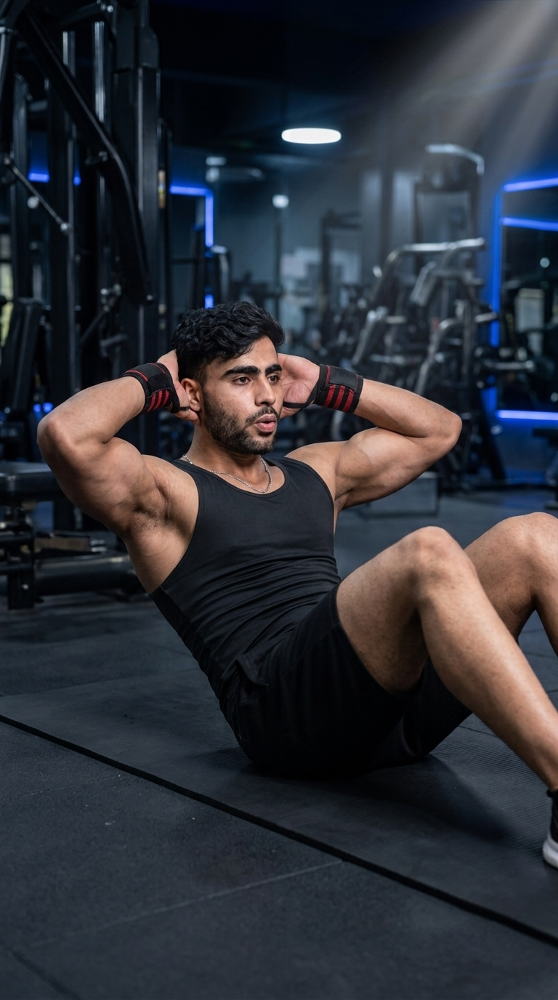

Primary Muscle
Rectus Abdominis
Strengthen Your Core with Proper Abdominal Activation
The Crunch is one of the most effective bodyweight exercises for strengthening the abdominal muscles, particularly the rectus abdominis. By focusing on controlled spinal flexion, it helps improve core stability, posture, and trunk strength without requiring any equipment. Whether you're training for a stronger midsection, better athletic performance, or overall core endurance, the Crunch is a fundamental exercise suitable for beginners and advanced fitness enthusiasts alike.

Rectus Abdominis
Bodyweight
Beginner
Isolation
Discover which muscles drive the Crunch and how the supporting core muscles work together to improve abdominal strength, trunk stability, posture, and overall core control for everyday movement and athletic performance.
Upper & Lower Abdominal Muscle Responsible for Trunk Flexion
Assist Trunk Flexion, Rotation & Core Stability
Deep Core Stabilization & Abdominal Bracing
Assist Hip Flexion During the Upward Movement
Discover how the Crunch strengthens your abdominal muscles, improves core stability, enhances posture, supports athletic performance, and builds a stronger, more functional midsection for everyday activities and sports.
Crunches primarily target the rectus abdominis, helping develop a stronger, more stable core that supports everyday movement and exercise performance.
A stronger core enhances trunk stability, making lifting, running, jumping, and other athletic movements more efficient and controlled.
Improved abdominal strength helps transfer force between the upper and lower body, benefiting sports, resistance training, and functional movements.
Strong abdominal muscles contribute to proper spinal alignment and help reduce excessive stress on the lower back during daily activities.
Crunches can be performed almost anywhere using only your body weight, making them an accessible exercise for home, gym, or travel workouts.
The Crunch is easy to learn, scalable for different fitness levels, and serves as an excellent foundation before progressing to more advanced core exercises.
Follow these step-by-step instructions to perform the Crunch with proper body positioning, controlled movement, and correct abdominal engagement to maximize core activation while minimizing strain on the neck and lower back.
Lie on your back with your knees bent and feet flat on the floor about hip-width apart. Place your fingertips lightly behind your ears or across your chest while keeping your lower back in a neutral position.
Relax your neck and keep your elbows open throughout the exercise.
Take a deep breath and tighten your abdominal muscles before beginning the movement. Keep your feet firmly planted and avoid using momentum.
Think about pulling your ribs toward your pelvis instead of lifting your head.
Exhale as you slowly curl your shoulders and upper back off the floor by contracting your abdominal muscles. Keep your lower back in contact with the floor throughout the movement.
Lift only until your shoulder blades leave the floor to keep the tension on your abs.
Hold the top position for a brief moment while squeezing your abdominal muscles. Avoid pulling on your neck or allowing your elbows to collapse inward.
Focus on quality muscle contraction rather than lifting as high as possible.
Inhale as you slowly lower your shoulders back to the starting position without completely relaxing your abdominal muscles. Repeat each repetition with smooth, controlled movement.
Perform each repetition slowly to maximize abdominal activation instead of relying on momentum.
Avoid these common technique mistakes to maximize abdominal activation, improve core strength, and perform the Crunch safely and effectively.
Pulling your head forward with your hands places unnecessary strain on the neck and reduces activation of the abdominal muscles.
Keep your hands relaxed and lift your torso using your abdominal muscles instead of pulling with your arms.
Swinging your upper body or rushing through each repetition decreases muscle engagement and makes the exercise less effective.
Perform every repetition slowly and under control while keeping constant tension on your abdominal muscles.
Raising your entire back off the floor shifts the work away from the abdominal muscles and places greater emphasis on the hip flexors.
Lift only until your shoulder blades leave the floor while keeping your lower back grounded.
Failing to breathe properly reduces core stability and makes it more difficult to maintain good technique throughout the exercise.
Exhale as you crunch upward and inhale as you slowly return to the starting position.
Apply these expert coaching cues to improve your Crunch technique, maximize abdominal activation, and perform every repetition with better control, stability, and core engagement.
Initiate every repetition by contracting your abdominal muscles instead of pulling your head forward with your hands.
Your abs should lift your torso—not your neck.
Perform both the lifting and lowering phases under control to maximize muscle tension and eliminate momentum.
Slow, controlled reps build stronger abs.
Breathe out while lifting your shoulders and inhale as you return to the starting position to improve core engagement and stability.
Proper breathing increases abdominal activation.
Raise only your shoulders and upper back off the floor while keeping constant tension on your abdominal muscles instead of trying to sit all the way up.
Better muscle contraction beats bigger movement.
Progress from learning proper Crunch technique to building a stronger, more stable core through improved control, endurance, and progressively challenging variations.
Master correct body positioning, breathing, and abdominal engagement using slow, controlled bodyweight repetitions.
Body position, breathing, abdominal contraction, and movement control.
Slow down every repetition, pause briefly at the top, and maintain continuous tension throughout each set to improve abdominal activation.
Controlled tempo, muscle contraction, breathing, and consistent technique.
Increase the challenge by holding a weight plate or dumbbell across your chest while maintaining perfect form and a full range of motion.
Progressive overload, core strength, and proper movement quality.
Build on your Crunch strength by progressing to more challenging movements such as Cable Crunches, Hanging Leg Raises, and Ab Wheel Rollouts while maintaining excellent core control.
Core strength, muscular endurance, advanced stability, and long-term progression.
Find answers to common questions about Crunch technique, muscles worked, proper form, breathing, training frequency, and how to strengthen your core safely and effectively.
The Crunch primarily targets the rectus abdominis while also engaging the internal and external obliques, transverse abdominis, and hip flexors as supporting muscles.
No. Lift only your shoulders and upper back until your shoulder blades leave the floor. This keeps the emphasis on your abdominal muscles instead of your hip flexors.
Exhale as you lift your shoulders and contract your abdominal muscles, then inhale as you slowly return to the starting position.
Yes. Crunches are beginner-friendly because they use only body weight and help build foundational core strength before progressing to more advanced abdominal exercises.
For most people, 2–4 sets of 10–20 controlled repetitions work well. Focus on proper technique and muscle contraction rather than performing as many reps as possible.
Most people can perform Crunches two to three times per week as part of a balanced core training routine, allowing adequate recovery between sessions.
Explore other core exercises that complement the Crunch and help you build stronger abdominal muscles, improve core stability, and develop greater trunk strength through both static and dynamic movements.


Continue strengthening your core with detailed exercise guides covering proper technique, muscles worked, common mistakes, expert coaching tips, and progression strategies designed for every fitness level.